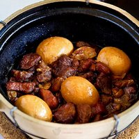

Recipes List 1
|
Recipes List 2
|
Recipes List 3
What's cooking - Popular dishes around the world
Here are 13 popular global dishes. You should be able to find any other dishes that you are looking for from among the cooking sites listed below.
Looking for new ways to cook a chicken? Here are 20 other ways.
1. American beef stew
Recipe from several revisions.
Get recipe...
2. English fish and chips
Something that is England...
Get recipe...
3. Chinese tau eu bak

Chinese tau eu bak
Get recipe...
4. French beef bourguignon
Boeuf bourguignon may be made one day ahead...
Get recipe...
Great cooking sites
just a click away
5. Indian chicken curry
This spicy chicken curry is better than any restaurant recipe...
Get recipe...
6. Salmon with maple syrup
My husband did not like salmon until he had this...
Get recipe...
7. Yangzhou
fried rice
Yangzhou fried rice with prawns, egg and char siu (roasted pork).
Get recipe...
8. Fried chicken (KFC-style)
How to make fried chicken (like KFC)
Get recipe...
9. Spanish mixed paella
An authentic seafood and chicken paella that...
Get recipe...
10. Spaghetti bolognaise
The all-time favourite dish and the most searched for recipe...
Get recipe...
11. Lamb Tagine (Morocco)
Lamb tagine with couscous
Get recipe...
12. Ceviche (South America)
Ceviche (also spelt as cebiche, seviche or sebiche), typically eaten at lunch, is very popular in Mexico, Chile, Peru, Ecuador and Colombia. Its main ingredient is raw fish "cooked" in citrus juice.
More...
13. Moussaka (Greece/Turkey)
Moussaka
Get recipe...
")


")